| Parameter | Mand | Type | Default | Constraints |
| spectrumset | yes | dataset | spectrum.pha | none |
Name of the counts spectrum file for which
the output RMF dataset is associated.
|
| rmfset | no | dataset | responsefile.ds | none |
Name of output response dataset.
|
| threshold | no | real | 1e-5 | 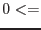 threshold 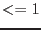 |
Threshold level for grouping.
All elements within the matrix
below this value are excluded in the formatted output.
|
| withenergybins | no | boolean | false | none |
If true use energy grid specified by energymin, energymax, and nenergybins, otherwise,
use the grid defined in the CAL.
|
| energymin | no | real | | none |
Used if withenergybins true.
Lower energy bound of matrix, in keV.
|
| energymax | no | real | 15 | none |
Used if withenergybins true.
Upper energy bound of matrix, in keV.
|
| nenergybins | no | integer | 30 | none |
Used if withenergybins true.
The number of bins in the energy grid
number of rows in RMF matrix.
|
| format | no | choice | var | fixed, var |
Format for MATRIX vector column. Set this to 'fixed'
to include all matrix elements.
|
| detmaptype | no | choice | psf | dataset flat psf |
The origin of the detector map: if set to dataset,
then the user must specify the name of that dataset,
via detmaparray.
If it is set to flat or psf, then the parameters
detxbins and detybins
define a detector map grid of the same size as the source extraction region.
A larger region can be defined by setting withdetbounds true and
setting the detxoffset, detyoffset parameters.
|
| detmaparray | no | array | detmapfile.ds: | none |
Name of detector map dataset and optionally array in the DAL compound notation.
Only used if detmaptype is set to dataset.
|
| withdetbounds | no | boolean | false | none |
For psf or flat detector maps.
If true
then the bounds of the internal detector map are taken from
the parameters detxoffset and detyoffset.
Otherwise, the bounds are taken from the DSS information
in the spectrum dataset.
|
| detxoffset | no | real | 1200 |
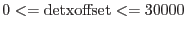 |
Used if withdetbounds is set true and detmaptype is set
to psf or flat.
This defines the half-width of
the detector map in DET coordinates.
For example, if the source x-coordinate is  ,
the x-bounds are [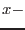detxoffset,
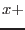detxoffset]. ,
the x-bounds are [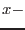detxoffset,
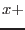detxoffset].
|
| detxbins | no | integer | 160 | 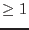 |
Used if detmaptype is set to psf or flat.
This is the number of bins along the x-axis of the map.
|
| detyoffset | no | real | 1200 |
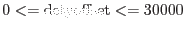 |
Used if withdetbounds is set true and detmaptype is
set to psf or flat.
This defines the half-height of
the detector map in DET coordinates.
For example, if the source y-coordinate is  ,
the y-bounds are [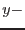detyoffset,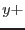detyoffset]. ,
the y-bounds are [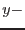detyoffset,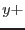detyoffset].
|
| detybins | no | integer | 160 | |
Used if detmaptype is set to psf or flat.
This is the number of bins along the y-axis of the map.
|
| correctforpileup | no | boolean | false | none |
Should a correction for pile-up be applied to the RMF.
|
| raweventfile | no | dataset | rawevents.ds | none |
Name of a raw events file which contains the energy and position of
each charge in a given CCD.
|
| acceptchanrange | no | boolean | false | none |
Force rmfgen to run on a spectrum with a non-standard PI channel range.
|
| Parameter | Mand | Type | Default | Constraints |